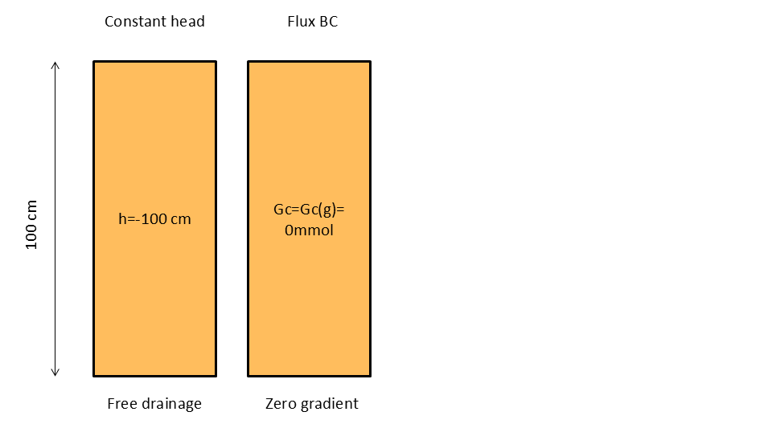
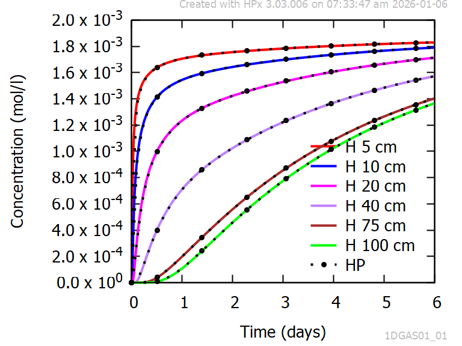
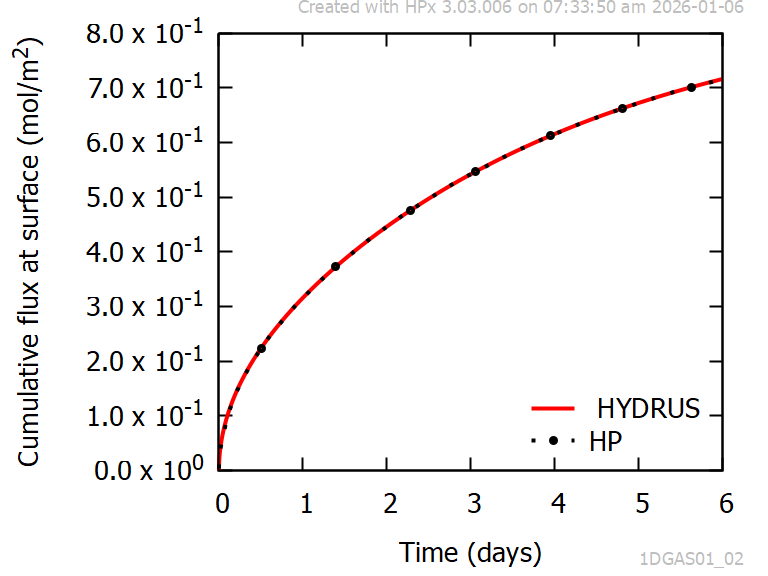

1D - Boundary value problem during no flow conditions
Problem definition
This verification problem considers diffusion of a gaseous component into a profile with a zero initial concentration of the component within the soil profile. During diffusion, there is equilibrium between the gaseous and the liquid phase. There is no water flow and a constant partial pressure of the gas component at the surface.
Acronym 1DGAS01
This verification problem is used in the section How To... Gas Diffusion.
Geometry
The profile has a length of 100 cm and consists of a single material.
Processes and Equations
|
Water flow equation |
vertical flow (α=1), no water sink (S=0) |
|
|
Solute transport |
|
Initial and boundary conditions
The initial and boundary conditions are illustrated in Figure 1.

Figure 1 - Schematic representation of initial and boundary conditions for water flow (left) and solute transport (right)
The upper boundary constant head value is -100 cm.
The concentration in the atmosphere is 2.217 mol/m3 or a partial pressure of 5.424 10-2. A stagnant boundary layer of 0.01 m is assumed.
Material Parameters
The hydraulic properties are described with the van Genuchten - Mualem model with m=1-1/n. Parameter values are in Table 1.
Table 1 - Parameters of the moisture retention curve and the unsaturated hydraulic conductivity as described with the model of van Genuchten -Mualem
|
θs |
0.43 |
|
θr |
0.078 |
|
α |
0.036 /cm |
|
n |
1.56 |
|
Ks |
24.96 cm/days |
|
l |
0.5 |
The parameters of the solute transport equation and dispersion are given in Table 2.
Table 2 - Parameters of the solute transport equation (advection-dispersion equation with gas equilibrium).
|
DL |
10 cm |
|
Dw |
2 cm2/day |
|
Dg |
20000 cm2/day |
|
1.18594 |
|
|
τ |
|
|
Thickness of stagnatn layer |
1 cm |
The equilibrium constant between the gaseous and aqueous field as defined in HYDRUS-1D (kg) should be transformed to the thermodynamic constant for HPx (see Equivalence between parameter in HP and HYDRUS). The value is 10-1.462398.
Evaluation method
HPx simulations are compared with the calculations results of HYDRUS-1D. The output variables are:
- Time series of aqueous concentrations of the component Gc at depths of 5, 10, 20, 40, 75 and 100 cm, and
- Cumulative influx of gaseous Gc at the surface
Numerical Settings
The profile is discretized in 100 elements with 101 equally-spaced nodes.
The minimum and maximum time steps are 10-7 and 0.01 days, respectively.
The Crank-Nicholson scheme for time weighting and the Galarkin finite element scheme for space weighting are used with a stability criterion (PeCr) equal to 0.1.
Results
Figure 2 shows an excellent agreement between the time series of aqueous concentration of Gc obtained with HYDRUS-1D and HPx at selected depths.
Figure 3 shows an excellent agreement between the cumulative influx of gaseous Gc at the surface obtained with HYDRUS-1D and HPx.

Figure 2 - Time series of aqueous concentrations of Gc for diffusive transport via the gas phase without any water transport (initial Gc free profile, constant partial pressure of Gc at the top boundary). Comparison between HPx and HYDRUS-1D.

Figure 3 - Time series of cumulative influx of Gc at the top boundary for diffusive transport via the gas phase without any water transport (initial Gc free profile, constant partial pressure of Gc at the top boundary). Comparison between HPx and HYDRUS-1D.
Project HYDRUS 5.x